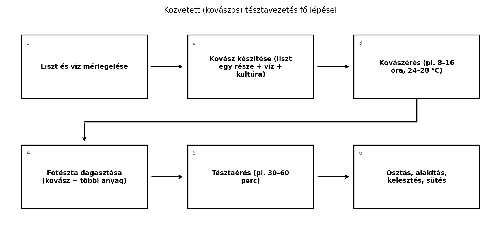

Hajnali műszakban a pék döntése, hogy egy kenyeret közvetlen élesztős tésztából süt, vagy előző nap kovászt készít hozzá, nem csak kényelmi kérdés. A közvetlen eljárás gyors, kevés lépésből áll, de a kész kenyérnek rövidebb az eltarthatósága, és kevésbé összetett az aromája. A közvetett, kovászos eljárás több tervezést, hűtőkapacitást és munkaidőt igényel, viszont jobb ízt, lazább bélszerkezetet és hosszabb frissen tartást adhat. Ugyanez a dilemma a teljes kiőrlésű termékeknél: a korpa kiszáradt, kemény részecskéi ronthatják a tészta állapotát, ezért a liszt egy részének előzetes áztatása vagy forrázása lágyabb, magasabb víztartalmú belső szerkezetet eredményez. Az alfejezet azt tanítja meg, hogyan válasszunk tésztavezetési eljárást a termék, az idő-, a gép- és a hűtőkapacitás függvényében.
A közvetlen és közvetett eljárás közötti alapvető különbséget úgy érdemes megjegyezni: a közvetlen eljárásnál minden lisztet, vizet, élesztőt és sót egyetlen dagasztásban dolgozunk össze; a közvetett eljárásnál a liszt egy részéből, vízből és élesztőből (vagy kovászkultúrából) előbb előtésztát, például kovászt készítünk, és csak ennek érése után dagasztjuk be a főtésztát. A különleges eljárások – hideg vezetés, autolízis, áztatás, forrázás – ezt a két alapelvet finomítják a liszt hidratációjának, a tészta hőmérsékletének és az időzítésnek a tudatos szabályozásával.
A következő folyamatábra a közvetett (kovászos) tésztavezetés fő lépéseit mutatja. A közvetlen eljárás ebből úgy származtatható, hogy az első két lépés (kovász készítése, kovászérés) elmarad, és a mérlegelés után rögtön a főtészta dagasztása következik.

A közvetlen eljárás rövid, ezért jól átlátható, a közvetett eljárás pedig egy érési szakaszt told be, ami a végtermék aromáját és a bélzet szerkezetét javítja. Az időtervet később, a különleges eljárásoknál táblázatosan is áttekintjük.
Definíció. Közvetlen tésztakészítésnek nevezzük, amikor az összes összetevőt egyetlen dagasztási műveletben dolgozzuk össze, és a tésztát legfeljebb rövid, általában 30–90 perces tésztaérés után feldolgozzuk.
Definíció. Közvetett tésztakészítésnek nevezzük, amikor a liszt, a víz, az élesztő vagy kovászkultúra egy részéből előbb előtésztát (például kovászt, öregtésztát, előtésztát) készítünk, azt meghatározott ideig érleljük, majd a főtésztába dolgozzuk.
Definíció. Hideg vezetésnek nevezzük, amikor a bedagasztott tésztát szabályozott alacsony hőmérsékleten, jellemzően 4–12 °C-on tároljuk, hogy az élesztőgáz-képződés lassuljon, a termelést pedig későbbi műszakra időzítsük.
Definíció. Autolízisnek nevezzük, amikor a lisztet és a vizet először élesztő és só nélkül, rövid ideig összekeverjük és pihentetjük, hogy a sikér és a keményítő vízfelvevése és enzimes hidrolízise már a dagasztás előtt meginduljon.
Definíció. Áztatásnak nevezzük, amikor a liszt vagy a korpa egy részét hideg vagy langyos vízben, esetleg tejben hosszabb ideig (1–16 óra) áztatjuk a tészta készítése előtt.
Definíció. Forrázásnak nevezzük, amikor a liszt egy részére forró vizet öntünk, és a keveréket elcsirizesítjük; a forrázott liszt a tésztában nagyobb vízmegkötést és lágyabb, nedvesebb bélszerkezetet ad.
Szabály. A tésztavezetési eljárás kiválasztásakor mindig négy szempontot vizsgálunk: a termék minőségi célját (aroma, bélzet, eltarthatóság), a rendelkezésre álló időt, a hűtő- és kelesztőkapacitást, valamint a munkaerő ütemezését.
Előnyök: rövid átfutás, kevesebb munkaóra, egyszerű
nyomon követés, kisebb a savanyodási kockázat.
Hátrányok: gyengébb aroma, kisebb térfogat-növekedés,
rövidebb frissen tartás, nagyobb élesztőigény.
Figyelem. A közvetlen eljárásnál az élesztő mennyiségét a lisztre vetítve általában 2–4 m/m% közé választjuk (ellenőrizendő: terméktípus és technológiai lap szerint). A túl nagy élesztőadag és a túl hosszú érlelés élesztős, savanykás mellékízt és széteső tésztát okozhat.
Előnyök: jobb aroma, nagyobb fajlagos térfogat,
lazább bélzet, jobb eltarthatóság, kisebb élesztőadag.
Hátrányok: több tervezés és munkaóra, hűtő- vagy
érlelőhely igény, nagyobb mikrobiológiai figyelem.
HACCP. A kovászérés fontos minőségi (GHP-) ellenőrző pont, ha a kovászt hosszú ideig tartjuk; CCP csak akkor, ha az üzemi HACCP-terv így rögzíti. A veszély a nem kívánt mikrobaszaporodás vagy a kovász túl savanyodása. Figyelni kell az érlelési hőmérsékletet, az időt, a pH-t és a kovász állagát. A határértékek tanulási példák, mindig a pékség HACCP-tervét kell követni (ellenőrizendő: üzemi HACCP-terv).
Hideg vezetés. A bedagasztott tésztát azonnal hűtőbe helyezzük, vagy hűtő-kelesztő kamrában 4–12 °C-on tartjuk (ellenőrizendő: termék- és gépfüggő). Az élesztő aktivitása ilyenkor lelassul, a tészta hosszú órákon át (6–18 óra) feldolgozható ablakkal rendelkezik. A hideg vezetés lehetővé teszi, hogy este bedagasszunk, és reggel süssünk.
Autolízis. A lisztet és a vizet élesztő és só nélkül összekeverjük, 20–60 percig pihentetjük, majd hozzáadjuk az élesztőt és a sót, és készre dagasztjuk. Az autolízis csökkenti a dagasztási időt, javítja a tészta nyújthatóságát és a késztermék térfogatát. Különösen teljes kiőrlésű liszteknél hasznos.
Áztatás. A teljes kiőrlésű liszt vagy a korpa egy részét (például a liszt 20–40 m/m%-át) azonos tömegű vízben 1–4 órán át áztatjuk, vagy hosszabb, akár 8–16 órás hideg áztatást alkalmazunk (ellenőrizendő: hűtési feltételek). Az áztatás során a korparészecskék megpuhulnak, a tészta jobban hidratálódik, ezért a késztermék bélzete nedvesebb, rugalmasabb.
Forrázás. A liszt egy részét (általában 10–30 m/m%) forró vízzel (85–95 °C) leöntjük, elkeverjük, és letakarva kihűtjük. A keményítő elcsirizesedik, a keverék sűrű pépes lesz. A forrázott lisztet a főtésztához adjuk; ez növeli a tészta vízfelvevő képességét, lágyabbá teszi a bélt, és lassítja az öregedést.
Előkeverékek. A száraz előkeverékek (például magvas, teljes kiőrlésű, gluténmentes keverékek) részben előkészített komponensek. Használatukkor a gyártó utasítását kell követni; az előkeverékek gyakran tartalmaznak adalékanyagokat, ezért az allergén- és adalékanyag-jelölést is ellenőrizni kell.
Példa 1 – A közvetlen és a közvetett eljárás időigényének
összehasonlítása.
Egy kis pékség 100 kg lisztből készít kenyeret. A közvetlen eljárásnál a
mérlegelés és dagasztás 30 perc, a tésztaérés 45 perc, a feldolgozás és
kelesztés 90 perc, a sütés 35 perc: összesen kb. 200 perc (3 óra 20
perc). A közvetett eljárásnál ehhez hozzáadódik a kovász készítése (15
perc) és a kovászérés (8 óra), így a teljes folyamat kb. 11 óra 35 perc
(200 + 15 + 480 = 695 perc), de az éjszakai üzemben ez az idő a hűtőben
vagy érlelőben telik. A példa szemléltető; a valódi idők a
kovásztípustól és a gépi kapacitástól függenek (ellenőrizendő: üzemi
technológiai lap).
Példa 2 – Áztatás és forrázás beépítése teljes kiőrlésű
tésztába.
Egy teljes kiőrlésű búzakenyérhez a teljes liszt 30 m/m%-át áztatjuk és
10 m/m%-át forrázzuk. Ha 20 kg teljes kiőrlésű lisztet használunk, akkor
az áztatott liszt
,
az áztatóvíz
,
a forrázott liszt
,
a forrázóvíz
(a forrázásnál liszt : víz = 1 : 2, tanulási példa). A főtésztához így
csak a maradék
lisztet és a recept szerinti többi vizet adjuk. Az áztatott és forrázott
részek miatt a tészta lágyabb, a bélzet nedvesebb lesz.
Példa 3 – Hideg vezetés hőmérsékletprofilja.
A hideg vezetésű tésztát bedagasztás után 28 °C-ról 60–90 perc alatt 8
°C alá hűtjük, majd 10 órán át 4–8 °C-on tároljuk (ellenőrizendő:
hűtőkapacitás és termék). A lassú lehűlés alatt az élesztő még termel
gázt, ezért a tésztát nagyobb edényben vagy kelesztőrácson, takarva kell
tárolni. A hűtés alatti túlzott gázképződés tömör szerkezetet és
szeszélyes kelést okozhat; ezért a hideg vezetésnél az élesztőadagot
általában 1–1,5 m/m%-ra csökkentjük (ellenőrizendő: receptúra).
Egy közepes pékségben a pékmester a hétvégi kenyérlimit miatt úgy döntött, hogy a vasárnap reggeli kenyérhez szombat este kovászt készít. A kovász lisztjét a teljes liszt 30 m/m%-ára méretezte, 26 °C-on érlelte 12 órán át. Vasárnap hajnalban a főtésztát a kovásszal, a többi liszttel és vízzel 27 °C-os tésztahőmérsékletre dagasztotta, 45 percig pihentette, majd a szokott módon feldolgozta. Az eredmény: a vásárlók dicsérték a kenyér illatát és bélzetét, a reklamáció a gyorsan száradó héjról megszűnt. A tanulság az, hogy a közvetett eljárás többletideje a termékminőségben és az eltarthatóságban térül meg, de csak akkor, ha a kovász érését dokumentáljuk és a hőmérsékletet betartjuk.
Termék: Rozsos kenyér, kenyérfélék; késztömeg 1,0 kg/db; tétel: 40,0 kg liszt, 70,2 kg tészta, kb. 64 db (1,0 kg késztömeg).
Receptúra-táblázat (főtészta és kovász együtt)
| Nyersanyag | Lisztre vetített % | Mennyiség (kg) | Megjegyzés |
|---|---|---|---|
| Búzaliszt BL 80 | 40 | 16,0 | A liszt teljes mennyiségéhez tartozó rész |
| Rozsliszt RL 90 | 60 | 24,0 | Ebből 12,0 kg a kovászba kerül |
| Víz | 72 | 28,8 | Kovászba 12,0 kg, főtésztába 16,8 kg |
| Só | 1,8 | 0,72 | Főtésztába |
| Sütőélesztő | 1,2 | 0,48 | Főtésztába, oldva |
| Érett kovászmag (előző napról) | – | 0,2 | Kovászba |
| Összesen | – | 70,2 | A tészta teljes tömege |
A kovász külön kimutatva: 12,0 kg rozsliszt, 12,0 kg víz, és az előző napról származó érett kovászkultúra (pl. 0,2 kg) – a kovász lisztje (12,0 kg) a teljes liszt (40,0 kg) 30 m/m%-a. A kovászérés 12 óra, 26 °C-on (ellenőrizendő: üzemi kovászprogram).
Műveleti paraméterek:
- Tésztakitermelés (TA): 172 (összes liszt 40,0 kg, összes víz 28,8 kg;
(40,0 + 28,8)/40,0 · 100 = 172).
- Dagasztás: kétkaros vagy spirálgép lassú fokozaton, 6–10 perc
bekeverés, gyors fokozat nélkül vagy csak rövid ideig (rozstöbbségű
tészta; tanulási példa, ellenőrizendő: üzemi technológiai lap);
tésztahőmérséklet 27 °C.
- Tésztaérés: 40 perc, letakarva, 26–28 °C.
- Feladási tömeg: 1,09 kg/db (8% sütési-hűlési veszteséggel: 1,0/0,92;
ellenőrizendő: tényleges veszteségmérés).
- Alakítás: hosszú cipó, szakajtóban vagy formában.
- Kelesztés: 30–35 °C, 75–85 % relatív páratartalom, 45–60 perc.
- Sütés: 230 °C-ról 210 °C-ra csökkenő hőmérsékletű kemence, gőzölés az
első 5 percben, teljes sütési idő 35–40 perc, maghőmérséklet 96–98
°C.
- Hűtés: rácsokon, 25 °C alá 60 perc alatt.
Allergén. A termék glutént tartalmaz búzából és rozsból. Ha a pékségben gluténmentes termékeket is gyártanak, a közös dagasztó- és formázóeszközök keresztszennyezést okozhatnak; a rozsos kenyér esetén a gluténmentes gyártósort külön kell választani (ellenőrizendő: üzemi allergénkezelési terv).
HACCP- és minőségi pontok. CCP (ha az üzemi HACCP-terv így rögzíti): a sütési maghőmérséklet és az idegenanyag-ellenőrzés. Minőségi (GHP-) pontok: a kovászérés hőmérséklete és ideje, a dagasztás utáni tésztahőmérséklet és a kelesztési hőmérséklet. A késztermék jellemzői: egyenletes, nem repedező héj, jól átsült bél, nem tömör, nem tapadós, kellemes kovászos illat. A paraméterek tanulási példák, az üzemi HACCP-tervben rögzített határértékeket kell használni.
A következő számozott lépések egy teljes kiőrlésű búzakenyér tésztavezetését adják meg, áztatással és forrázással. Az értékek tanulási példák.
A tésztavezetési eljárás minőségét a tészta állapotán és a készterméken ellenőrizzük. A közvetlen eljárású tészta akkor jó, ha sima, enyhén gázos, nem ragad a tálhoz, a kész kenyérhéj egyenletes, a bélzet laza, de nem lyukacsos. A közvetett eljárású tésztánál a kovásznak kellemesen savanykás, nem csípős illatúnak kell lennie; a főtészta jól nyúljon, ne legyen ragacsos. Az áztatott-forrázott tészta lágyabb, magasabb víztartalmú, ezért az osztásnál és alakításnál több lisztszórást igényelhet. A hideg vezetésű tésztánál a hűtőből kivett tészta felszíne legyen száraz, ne mutasson bőrösedést; a kelési próba megmutatja, hogy az élesztő aktivitása megmaradt-e.
Hiba: A közvetett eljárásnál a kovászt túl kevés
lisztből készítik, ezért a főtésztában alig érvényesül a kovászos
jelleg.
Ok: A kovásznagyságot a teljes lisztre vetítve nem
számolták ki, vagy a kovászt túl rövid ideig érlelték.
Megoldás: A kovászhoz a teljes liszt legalább 20–30
m/m%-át használjuk, az érlelési időt és hőmérsékletet a kovászprogram
szerint tartsuk be.
Hiba: A hideg vezetésű tészta reggelre
túlsavanyodik és szétesik.
Ok: A hűtés nem elég gyors, vagy az élesztőadagot nem
csökkentették a hideg vezetéshez.
Megoldás: Az élesztőt 1–1,5 m/m%-ra kell venni, a
tésztát gyorsan 8 °C alá hűteni, a hűtő hőmérsékletét ellenőrizni és
dokumentálni.
Hiba: A forrázott tésztából készült kenyér
bélzete tömör, ragadós.
Ok: A forrázott lisztet még forrón adták a tésztához,
vagy túl nagy volt a forrázott rész aránya.
Megoldás: A forrázatot 25–30 °C-ra kell hűteni, és a
forrázott liszt arányát 20 m/m% alatt tartani, ha a tészta gépi
feldolgozása nehézséget okoz.
Hiba: Az autolízises tészta nem kel meg
rendesen.
Ok: Az autolízis után elfelejtették hozzáadni az
élesztőt, vagy a sót túl korán, az autolízis előtt tették be.
Megoldás: Az autolízis mindig élesztő és só nélkül
indul, az élesztőt és sót csak a pihentetés után adjuk hozzá, majd a
dagasztást befejezzük.
1. feladat (A) Írd le a közvetlen tésztakészítés fő lépéseit számozva.
2. feladat (A) Sorold fel a közvetett eljárás előnyeit és hátrányait legalább két-két pontban.
3. feladat (B) Egy pékség 30 kg lisztből készít kovászos kenyeret. A kovászba a teljes liszt 25 m/m%-át teszik. Mennyi liszt kerül a kovászba, és mennyi marad a főtésztába? (A kovász lisztje a teljes liszt része.)
4. feladat (B) Tervezz egy áztatásos-forrázásos teljes kiőrlésű tésztát 24 kg liszttel. A liszt 20 m/m%-át áztatjuk, 10 m/m%-át forrázzuk. Számítsd ki az áztatott liszt, az áztatóvíz (liszt : víz = 1 : 1), a forrázott liszt és a forrázóvíz (liszt : víz = 1 : 2) tömegét.
5. feladat (C) Egy hideg vezetéses tételnél a pék az élesztőadagot nem csökkentette, és a tésztát csak lassan hűtötte le. Milyen tüneteket várhatunk a reggeli feldolgozáskor, és mi lett volna a helyes eljárás?
6. feladat (D) A technológiai lapban szereplő rozsos kenyérhez a pék a kovászt elfelejtette letakarni, és a kovász hőmérséklete 30 °C-ra emelkedett. Milyen veszélyt jelent ez, és hogyan döntene a HACCP szerint?
1. feladat (A)
1. Liszt, víz, élesztő, só és egyéb anyagok kimérése.
2. A száraz anyagok és a víz/élesztő-oldat összekeverése.
3. Dagasztás teljes tésztakialakulásig, 26–28 °C
tésztahőmérsékletre.
4. Tésztaérés 30–90 percig.
5. Osztás, alakítás, kelesztés, sütés.
2. feladat (A)
Előnyök: jobb aroma, nagyobb térfogat, lazább bélzet, jobb
eltarthatóság, kisebb élesztőadag. Hátrányok: több munkaóra,
hűtő-/érlelőhely igény, nagyobb mikrobiológiai figyelem, hosszabb
átfutás.
3. feladat (B)
Adott: teljes liszt 30 kg, kovásznagyság 25%. Keresett: kovászba kerülő
liszt, főtészta liszt.
Kovászba:
.
Főtésztába:
.
Ellenőrzés:
.
∎
4. feladat (B)
Adott: teljes liszt 24 kg. Áztatás 20%, forrázás 10%.
Áztatott liszt:
.
Áztatóvíz:
(1:1).
Forrázott liszt:
.
Forrázóvíz:
.
Ellenőrzés: az áztatott és forrázott liszt összesen
,
a maradék főtészta-liszt
.
5. feladat (C)
Tünetek: a tészta reggelre túlkelt, ragacsos, savanyú szagú, gyenge
sikérvázzal; a sütés során összeesik, a bélzet tömör, a héj egyenetlen.
Helyes eljárás: az élesztőadagot csökkenteni kellett volna 1–1,5
m/m%-ra, a tésztát gyorsan 8 °C alá hűteni, a hűtő hőmérsékletét
ellenőrizni, és a tárolási időt a hűtőkapacitáshoz igazítani.
6. feladat (D)
A 30 °C gyorsítja az érést és a savanyodást (ez minőségi eltérés, nem
élelmiszer-biztonsági); a takaratlanság kiszáradást és
idegenanyag-kockázatot jelent. Teendő: a kovászt érzékszervileg és
pH-val/savfokkal ellenőrizni; ha érett és tiszta, az érési idő
rövidítésével felhasználható, ha túlsavanyodott vagy szennyezett, a
HACCP-terv szerint el kell különíteni, és dönteni kell a sorsáról
(ellenőrizendő: üzemi kovászprogram). A helyes gyakorlat: a kovászt
lefedve, 24–28 °C-on érlelni, a hőmérsékletet dokumentálni.
A tésztavezetési eljárás megválasztása a termék minőségi céljától, az időtervtől, a hűtőkapacitástól és a munkaerőtől függ. A közvetlen eljárás egyetlen dagasztással készül, rövid, de kisebb aromát és rövidebb eltarthatóságot ad. A közvetett eljárás előtésztát, leggyakrabban kovászt használ: a kovász a teljes liszt 20–30 m/m%-ából készül, 24–28 °C-on érlelődik, majd a főtésztába kerül. A különleges eljárások közül a hideg vezetés 4–12 °C-on lassítja az élesztőt, ezért az élesztőadagot 1–1,5 m/m%-ra kell csökkenteni. Az autolízis az élesztő és só nélküli liszt-víz pihentetés 20–60 percig. Az áztatás (pl. 1:1 arány, 1–16 óra) puhítja a korpát, a forrázás (pl. liszt : víz = 1 : 2 arány, 85–95 °C vízzel) elcsirizesíti a keményítőt. Minden technológiai paraméter tanulási példa, és az üzemi technológiai lap, HACCP-terv és gyártói utasítás szerint ellenőrizendő. A sütési maghőmérséklet és az idegenanyag-ellenőrzés CCP lehet (az üzemi HACCP-terv szerint); a kovászérés hőmérséklete és ideje, valamint a hűtött tészta hőmérséklete minőségi (GHP-) pont.